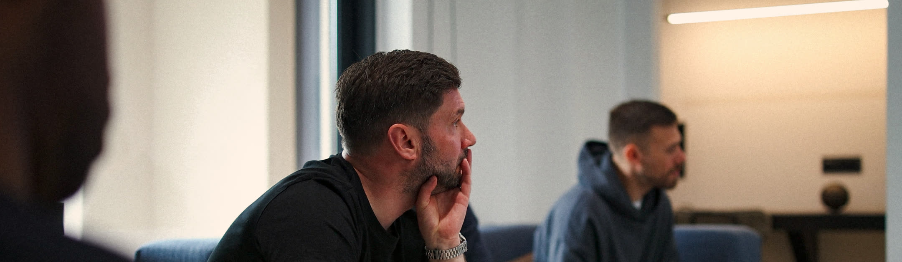

Trade
Winds.
In Good Company.
Films and stills of the rooms Trade Winds brings together.
Version two. Rebuilt around what you told me on 14 October.
Hi Gary,
Thanks for going through the first version with me on Wednesday. I've rebuilt it around what you told me.
It's now two chapters. The first gets Trade Winds live for the new year. The second keeps it current through the first quarter.
It starts with the Table on the 22nd.
Charlie
Gary Swanwick
The product is the room.
The work follows what you're actually running.
The January film is your story. From the new year the members take over.
Nothing you run before Christmas gets missed.
The site never falls behind the rooms. Every month adds new film, loops and photos.
You control the risk. Chapter Two is confirmed in December once you've seen the work and how the OGs respond.
The tone is yours from the brief: warm, understated, established, premium without being pretentious.
Work we create.
From three years filming Heroic Man. A serious room on a wider scale, carried by its atmosphere. The closest thing to what you described.
The launch of a Berkshire men's club, told through the people in it.
Work we've already made together.

The six months.
- October
- The Table on the 22nd. You at first light on the river.
- November
- The roundtable or the fireside chat. Photos and loops land.
- December
- The second of the two. The founder film lands by the 11th.
- January
- Live on the 1st. The founder film goes out on the 4th, the fireside film mid-month. The first Table of the year.
- February
- The Porsche event.
- March
- One room, ideally South Midlands. Review.
If the 22 October Table can't be filmed we film the 26 November Table instead.
How it comes together.
- The brand
- Steve at Clever Little Design is doing the rebrand. Every frame is shot to his direction: place over polish, real moments, nothing facing the camera. The brand runs the same way through everything.
- The Table
-
Guests are told before the night that the first half hour is being filmed. No audio is recorded at the table. Releases are signed on arrival. Anyone who'd rather not be on camera sits out of shot or books the next Table instead.
Then the camera leaves. Chatham House starts when the camera leaves.
Member interviews cover their own experience only, never what anyone else said.
- Member stories
- The full member stories wait for the founding members, because a member who's joined saying why is the strongest proof there is.
- The website
- I'm building your website on Steve's new brand. I'll send the price over separately next week.
£2,500 a month, October to March.
One partnership in two chapters.
- Thursday 22 October: the Entrepreneurs' Table. The arrivals and the first half hour, plus short interviews with two or three members before dinner.
- Late October: you at first light on the river at Cookham with your interview on what Trade Winds is and why you started it.
- November: the lawyer roundtable or the fireside chat, whichever comes first.
- December: whichever of the two is left.
- The founder film: 60 seconds of your story with members' voices. Made for the site, with a version for LinkedIn and Instagram. Delivered by Friday 11 December so it can go out with the offer to the OGs first.
- The homepage loop: silent, the river at first light, exported light so the site stays fast.
- Six section loops of three to five seconds, one for each section of the site, so the page moves as you scroll.
- Around 50 finished photographs from all four shoots, including stills of you and the members taken during their interviews. Nothing on the site is stock.
- Members' words: two or three members named on the site, with their stills and what they told us.
- A short film from the fireside chat, ready to go out in January.
Photos and loops land by the end of November so the website can be built around them. On 1 January the site goes live with all of it. The founder film goes out on LinkedIn and Instagram on Monday 4 January, when people are back at their desks.
Confirmed on Greenlight.
One room filmed each month. Each becomes a short film (or a member's story once the OGs have joined), four short videos for LinkedIn and Instagram, plus stills, new loops and photos for the site so it always shows what's happening now. You write your own captions. I give you a short title and a steer for each.
- January: the fireside chat film goes out mid-month. I film the first Table of the year.
- February: the Porsche event, if it's dated by then.
- March: a Table, a walk or an Expert Briefing, ideally in the South Midlands so the second region is seen. At the end of the month we review it together and plan the next quarter.
By the end of March you have five films, twelve short videos, around 100 photographs and a site that's changed every month.
Confirmed by Friday 11 December, once you've seen the founder film.
£2,500 at the start of each month. October's is paid on Greenlight.
Across the six months it's more than the January number you gave me. The difference is January to March: the rooms after launch, filmed as they happen.
Plus the website, quoted separately.
Pay by bank transfer or card, whichever's easier.
Beyond March.
Paid ads behind the films with a partner I trust, so the content and the ads sit in one place. And Run your business like you'll sell it as a series in your own voice.
This holds until 12pm Monday 19 October, so the guests at the 22 October Table can be told in good time.